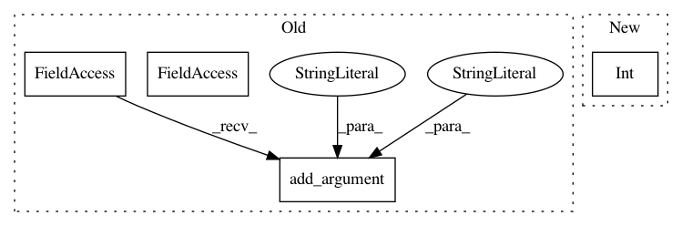

d36da2e5144a40072b11e39f9da6725cc3f4441e,flow/visualize/time_space_diagram.py,,,#,430
Before Change
help="The minimum speed in the color range.")
parser.add_argument("--start", type=float, default=0,
help="initial time (in sec) in the plot.")
parser.add_argument("--stop", type=float, default=float("inf"),
help="final time (in sec) in the plot.")
args = parser.parse_args()
// flow_params is imported as a dictionary
After Change
for lane, df in traj_df.groupby("lane_id"):
ax = plt.subplot(nlanes, 1, lane+1)
plot_tsd(ax, df, segs[lane], args, int(lane+1), ghost_edges={"ghost0", "119257908/Ǚ"})
plt.tight_layout()
else:
// perform plotting operation
In pattern: SUPERPATTERN
Frequency: 3
Non-data size: 4
Instances
Project Name: flow-project/flow
Commit Name: d36da2e5144a40072b11e39f9da6725cc3f4441e
Time: 2020-07-08
Author: jonny5@berkeley.edu
File Name: flow/visualize/time_space_diagram.py
Class Name:
Method Name:
Project Name: HyperGAN/HyperGAN
Commit Name: bd1f28119aa42898c2cbe1a3a101b6e862e43a06
Time: 2020-06-14
Author: martyn@255bits.com
File Name: examples/experimental/next-frame.py
Class Name:
Method Name:
Project Name: AlexEMG/DeepLabCut
Commit Name: 8f21597f5113a909dcc9a3e886846609425de783
Time: 2019-07-14
Author: amathis@fas.harvard.edu
File Name: deeplabcut/pose_estimation_tensorflow/train.py
Class Name:
Method Name: